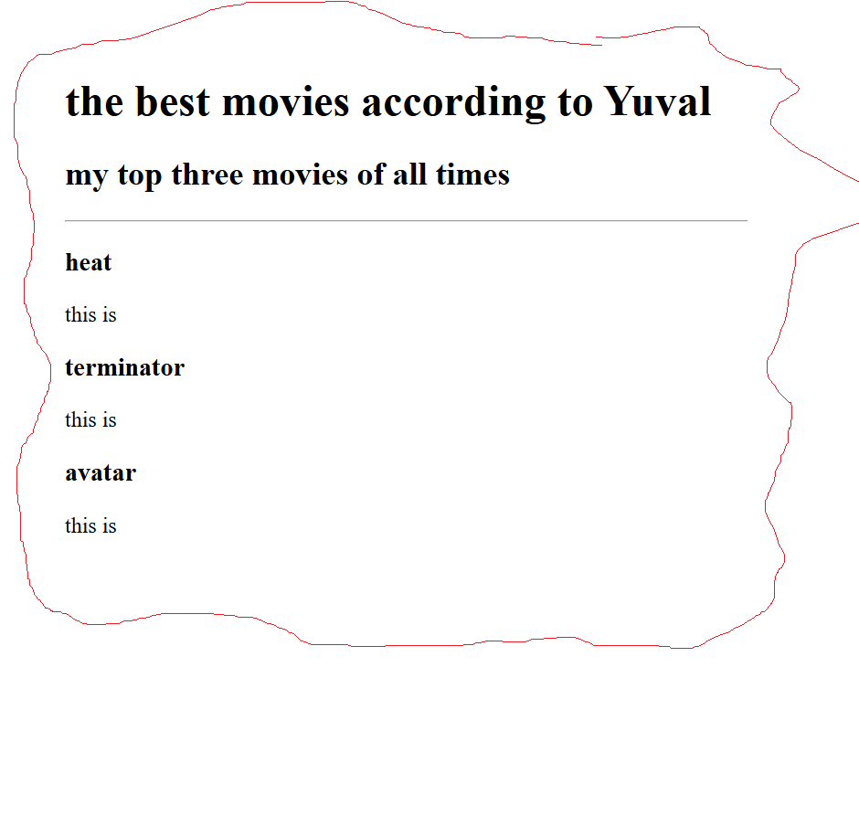

<!-- TODO 1: Create the HTML Boilerplate -->

<h1>Yuval's Portfolio</h1>

<h2>i'm a web developer</h2>
<!-- TODO 2: Add Your previous projects' HTML into the public folder -->

<!-- TODO 3: Take screenshots of your project previews and add the images to the images folder -->

<!-- TODO 4: Add titles/subtitles etc. -->
<hr>

<!-- TODO 5: Add a link to the project pages -->

<a href="./public/movie-ranking.html">Movie ranking Project</a>

<br/>
<br/>



<!-- TODO 6: Add images to show the project previews
HINT for TODO 6: You can use the height attribute set to 200 to make the image smaller:
https://developer.mozilla.org/en-US/docs/Web/HTML/Element/img#attr-height -->

<!-- TODO 7: Add the Contact Me and About Me page links -->